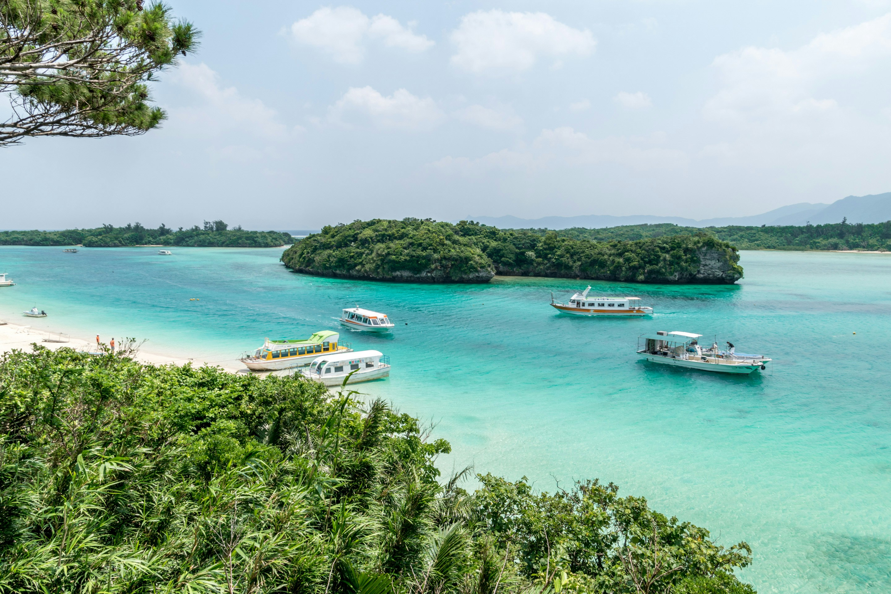
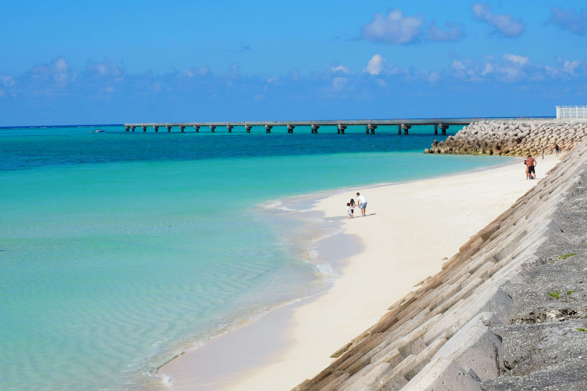

Galería



Aguas cristalinas, arena blanca y clima tropical durante todo el año.
Las playas de Okinawa, en Japón, son famosas por sus aguas cristalinas, arena blanca y paisajes tropicales. Ubicadas en el sur del país, estas islas ofrecen un clima cálido durante gran parte del año, ideal para el turismo.
El mar que rodea Okinawa destaca por sus arrecifes de coral y su rica biodiversidad marina. Playas como Emerald Beach o Manza Beach son destinos muy populares entre visitantes.
Explora los arrecifes de coral y la vida marina.
Disfruta de aguas tranquilas y cristalinas.
Disfruta de impresionantes puestas de sol sobre el océano.


Para llegar a las playas de Okinawa, primero debes volar al aeropuerto de Naha desde las principales ciudades de Japón. Una vez allí, puedes moverte en autobús, taxi o alquilar un coche.
También existen ferris para visitar otras islas cercanas con playas más tranquilas y menos concurridas.